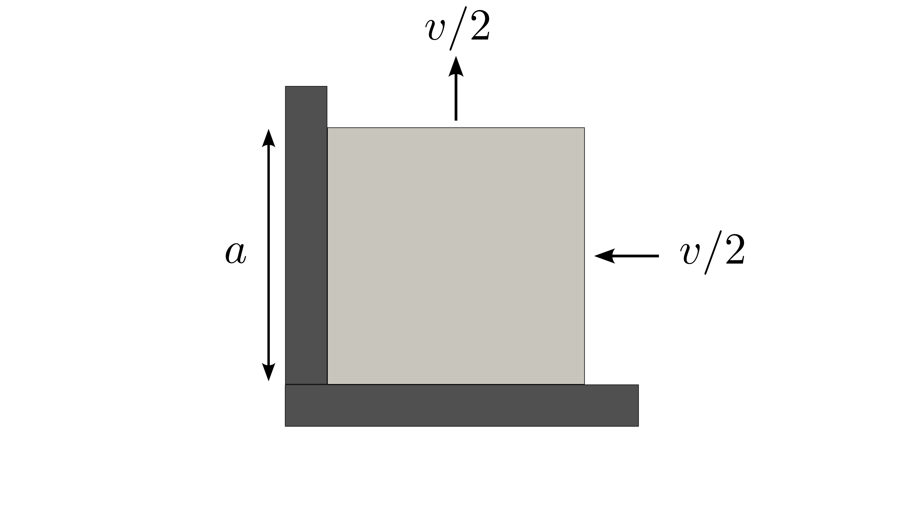
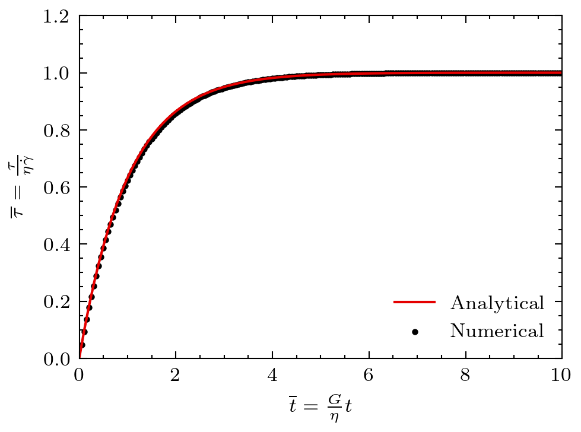

Linear Maxwell viscoelasticity
This problem considers a squared medium subject to external velocities leading to a stress build-up. The material deforms following a linear Maxwell viscoelastic constitutive model. This problem was first introduced by Gerya and Yuen (2007).
Setup
The squared medium is subject to a compressive velocity horizontally and tension velocity vertically resulting in a deviatoric stress build-up. The setup is sketched in Figure 1.

Figure 1: Setup for the linear Maxwell viscoelastic medium.
Solutions
The stress evolution is governed by the following constitutive model:
where is the deviatoric stress tensor and the deviatoric strain tensor.
The solution for this problem is given by Gerya and Yuen (2007). The stress solution is given as:
where:
With the following dimensionless quantities: and , the solution can be expressed as:
(1)
Figure 2: Stress evolution in a linear viscoelastic Maxwell medium.
Complete Source Files
References
- Taras V. Gerya and David A. Yuen.
Robust characteristics method for modelling multiphase visco-elasto-plastic thermo-mechanical problems.
Physics of the Earth and Planetary Interiors, 163(1-4):83–105, 2007.
doi:10.1016/j.pepi.2007.04.015.[BibTeX]